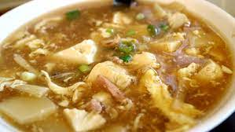

Spicy Cabbage Soup Recipe

Description
This spicy cabbage soup is soup-er easy to make. We begin with
bacon, cooking down in the pot, so that we can sautee our cabbage and onions
in the grease. The bacon gives us plenty of time to cut our veggies.
Once everything is fried up, we can add the beef stock --
only 12 minutes until done! What a great weekday meal.
Ingredients
- 1/2 lb bacon
- 1/2 head cabbage
- 2 medium onions
- 3 medium potatoes
- 4 cups beef stock
- 3 tablespoons red pepper flakes
- 2 bay leaves
- salt and pepper to taste
Steps
- Cook bacon in large pot for 10-15 minutes, flipping halfway
- While bacon is cooking, chop cabbage and onion
- Remove bacon from pot, and sautee cabbage and onion, ~ 5 minutes
- Add potatoes, beef stock, red pepper, bacon, and bay leaves
- Boil for 12 minutes, or until potatoes are soft
- Smash potatoes against side of pot to thicken soup base
- Serve and enjoy!